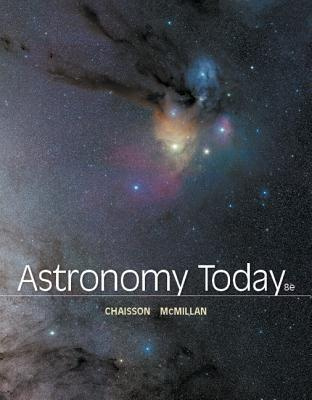
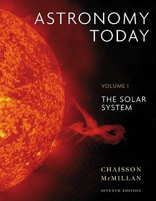

Recommended Books
Books are always good compilation of knowledge.
-


-
NightWatch A Practical Guide to Viewing the Universe
Author: Terence Dickinson
-
Astronomy Today
Author: Eric Chaisson＆Steve McMillan

Interesting Websites
-
NASA's website
There are many informations and news in it, we all know that NASA is the most advanced organization in space , don't we?
If you just want to view some pictures or get a wallpaper, it is a good choice too!
Click Here to the picture gallery of NASA.
Image of the day
(I love this function! Shortcut(快捷指令) for ios (to get the image of the day))
-
Galuxe(鴻宇光學)
This is a telescope store in Taiwan, it include planty of information about telescope, stargazing and astromical photography.
If you want to buy a telescope, it will help you a lot!
You can also learn how they work and how to use them if you have one.